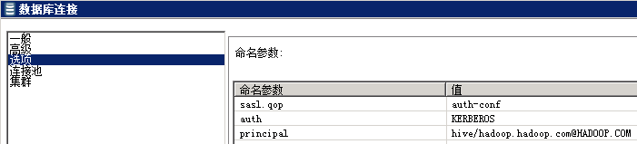
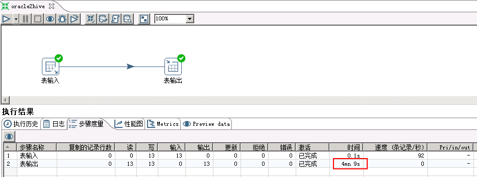
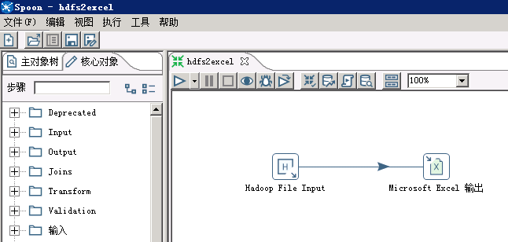
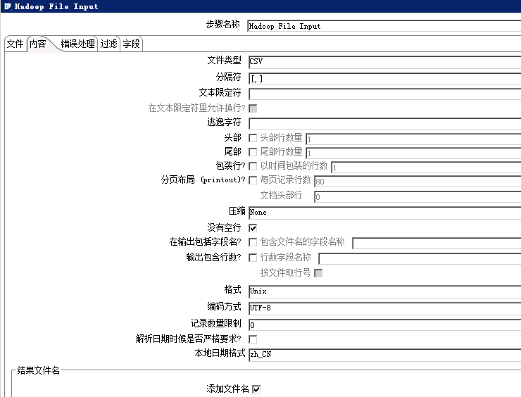

Kettle对接FusionInsight¶
适用场景¶
Kettle 6.1 ↔ FusionInsight HD V100R002C60U10 (HDFS/Hive)
Kettle 6.1 ↔ FusionInsight HD V100R002C70U10 (HDFS/Hive)
Kettle 6.1 ↔ FusionInsight HD V100R002C80U10 (HDFS/Hive)
Kerberos支持能力说明¶
Pentaho(7.0-9.0)目前仅仅在企业版（EE）支持Kerberos认证的Hadoop, Pentaho社区版（CE）不支持Kerberos认证的Hadoop，相关答复参考以下链接：https://forums.pentaho.com/threads/230953-Is-Kerberos-auth-Enterprise-only/
Kettle 6.1，所以虽然代码上没有支持Kerberos认证，但是可以通过手动在OS层面进行Kerberos认证来连接安全集群，6.1以后的CE版本由于架构调整，无法通过读取OS上的Kerberos认证信息连接安全集群。
环境准备¶
Linux平台¶
-
安装操作系统
-
安装CentOS6.5 Desktop
-
禁用防火墙，SELinux
-
添加本地主机名解析
-
使用
vi /etc/hosts添加本地主机名解析162.1.115.89 kettle
-
安装FusionInsight HD客户端
-
下载完整客户端，安装至目录
/opt/hadoopclient -
使用
vi /etc/profile编辑以下内容插入到文件末尾source /opt/hadoopclient/bigdata_env
-
将krb5.conf放在/etc目录下
cp /opt/hadoopclient/KrbClient/kerberos/var/krb5kdc/krb5.conf /etc/
Windows平台¶
- 安装JDK8

-
配置系统环境变量
JAVA_HOME= C:\\Program Files\\Java\\jdk1.8.0_112
-
在PATH环境变量添加
%JAVA_HOME%\bin;%JAVA_HOME%\jre\bin; -
获取Kerberos配置文件
在FI管理界面下载用户的认证凭据
 解压后得到Kerberos配置文件krb5.conf和用户密钥文件user.keytab
解压后得到Kerberos配置文件krb5.conf和用户密钥文件user.keytab
-
将krb5.conf文件复制
C:\Windows目录下，重命名为krb5.ini -
添加系统环境变量KRB5_CONFIG（可选步骤）
KRB5_CONFIG=C:\Windows
配置并启动Kettle¶
-
从以下地址 https://sourceforge.net/projects/pentaho/files/Data%20Integration/ 下载Kettle6.1版本
-
解压得到data-integration目录
-
替换pentaho-big-data-plugin下的配置文件
-
下载FusionInsightHD客户端并解压
-
用解压目录下
Hive/jdbc-examples/conf/core-site.xml文件 -
替换
data-integration/plugins/pentaho-big-data-plugin/hadoop-configurations/hdp23目录下的core-site.xml文件 -
替换Hive相关jar包
将data-integration/plugins/pentaho-big-data-plugin/hadoop-configurations/hdp23/lib下的hive相关的jar包

替换成Hive客户端下jdbc-examples/lib目录下的以下jar包

-
获取用户keytab文件
-
在FI管理界面下载用户的keytab文件到本地
-
Kerberos认证（可选步骤）
在对接Hive时，可以使用本地缓存的认证票据，或者在jdbc URL中指定principal和keytab文件进行认证（对接HDFS时，只能使用本地缓存的票据）
如果使用本地缓存的票据，需要在启动kettle前先完成认证。

使用本地缓存票据存在以下问题：kettle只在启动时读取一次票据，而不是连接时实时读取当前票据信息，所以当kettle启动时获取的票据过期以后，连接Hive会失败，必须重启kettle。
-
启动kettle
-
Linux平台
VNC登录CentOS桌面，打开Terminal
cd /opt/data-integration/ ./spoon.sh
-
Windows平台
双击data-integration目录下的Spoon.bat
对接Hive¶
创建Hive连接¶
-
选择 文件 -> 新建 -> 转换
-
点击 主对象树 页签，在页签中选择 转换 -> DB连接，右键选择 新建

- 连接类型选择Hive 2，填写主机名、端口号、数据库名

- 点击左侧 选项，如果使用本地缓存票据，填写以下参数：

- 如果要在连接Hive时使用keytab文件认证，增加user.principal和user.keytab两个参数：

- 测试连接时，Hadoop版本选用HDP2.3


- 连接测试成功后，点击 确认 保存连接
读取Hive数据¶
以hive -> postgresql为例
-
将上面创建的转换保存为hive2postgres.ktr
-
创建postgresql连接

- 添加转换步骤
在 核心对象 页签下，拖动 输入 -> 表输入，和 输出 -> 表输出 两个步骤到工作区，并连接这两个步骤。

- 修改Hive表输入配置
双击 表输入 步骤， 数据库连接 选择前面创建的hive连接，点击 获取SQL查询语句 ，选择需要导入的hive表

- 修改postgresql表输出配置
双击 表输出 步骤，数据库连接中 选择前面创建的postgresql连接，点击 获取目标表配置 如下（需要先在postgresql数据库创建目标表）

-
运行转换
-
保存配置，点击 执行 按钮，选择 本地执行

执行结果：

postgresql数据库查看：

写入Hive数据¶
以oracle -> hive为例
- 添加Oracle JDBC Driver
从http://www.oracle.com/technetwork/database/features/jdbc/index-091264.html
下载对应版本的jdbc Driver，放到data-integration/lib目录下，重启kettle
-
新建转换，保存为oracle2hive.ktr
-
创建Oracle连接

-
参考上面章节创建hive连接
-
创建待导入的Hive表
CREATE TABLE IF NOT EXISTS kettle_export ( id int, name string );
-
添加转换步骤

-
修改步骤配置
-
Oracle表输入配置

- Hive表输出配置


- 运行转换
保存配置，点击 执行 按钮，选择 本地执行
执行结果：向Hive表写入13条数据，用时4min+

查看Hive表数据：


说明：向Hive表中写入数据，每插入一条数据会起一个MR任务，所以效率特别低，不推荐用这种方式，可以将数据写入HDFS文件
对接HDFS¶
创建Hadoop Cluster¶
- 选择 文件 -> 新建 -> 转换，点击 主对象树 页签，在 Hadoop Clusters 右键选择 New Cluster
HDFS的Hostname填写NameNode主节点的IP，端口号是25000，如果NaneNode发生主备切换，需要修改IP
JobTracker的Hostname 填写 Yarn ResourceManager主节点的IP，端口号是26004，如果ResourceManager发生主备切换，需要修改IP。

点击 测试

kettle6.1不支持HDFS NameNode和Yarn ResourceManager的HA配置
导入HDFS文件¶
以postgresql -> HDFS为例
-
将上面创建的转换保存为postgres2hdfs.ktr
-
参考前面章节创建postgresql连接
-
添加转换步骤
在 核心对象 页签下，拖动 输入 -> 表输入 ，和 Big Data -> Hadoop File Output 两个步骤到工作区，并连接这两个步骤。

- 创建待导入的Hive表
CREATE TABLE IF NOT EXISTS sample_kettle_hdfs_test ( code string, description string, total_emp int, salary int ) ROW FORMAT SERDE 'org.apache.hadoop.hive.contrib.serde2.MultiDelimitSerDe' WITH SERDEPROPERTIES ("field.delim"="[,]") STORED AS TEXTFILE;
如果数据中含有”,”，列分隔符不可以使用默认的”,”，本样例使用多字节分隔符”[,]”
- 修改postgresql表输入配置
双击 表输入 步骤，数据库连接 选择前面创建的postgresql连接，点击 获取SQL查询语句，选择需要导入的表

- 修改Hadoop File Output配置
双击 Hadoop File Output 步骤，在 文件 页签下，Hadoop Cluster 选择前面创建的集群，Folder/File 选择到hive表对应的hdfs目录，文件名可以任意指定

- 点击 内容 页签，分隔符设置与前面创建的Hive表相同，勾选 快速数据存储（无格式）（否则保存的文件中会按字段长度填充空格）

- 点击 字段 页签，获取字段

- 运行转换
保存配置，点击 执行 按钮，选择 本地执行 。
- 执行结果：

- 查看导入的HDFS文件：

- 查看Hive表数据：

读取HDFS文件¶
以HDFS -> Excel为例
-
新建转换，保存为hdfs2excel.ktr
-
添加转换步骤
在 核心对象 页签下，拖动 Big Data -> Hadoop File Input 和 输出 -> Microsoft Excel 输出，两个步骤到工作区，并连接这两个步骤。

- 修改 Hadoop File Input配置
双击 Hadoop File Input 步骤，文件 页签，选择待导出的文件，文件类型支持CSV（txt也可以）和Fixed（固定列宽）

点击 内容 页签，选择文件类型、分隔符、编码方式等

点击 字段 页签，获取字段

kettle会自动扫描文件中的字段类型和长度

可以手动修改字段名称和长度

点击 确定 按钮，保存配置
- 修改Microsoft Excel输出配置
双击 Microsoft Excel 输出 步骤，选择文件保存位置和文件名

点击 内容 页签，获取字段

- 运行转换
保存配置，点击 执行 按钮，选择 本地执行
- 执行结果

- 查看导出的excel文件